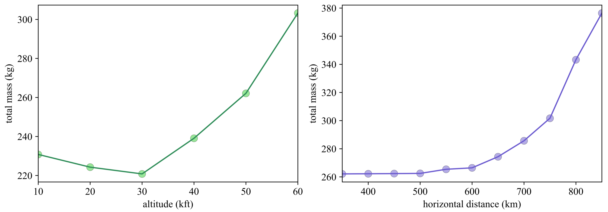
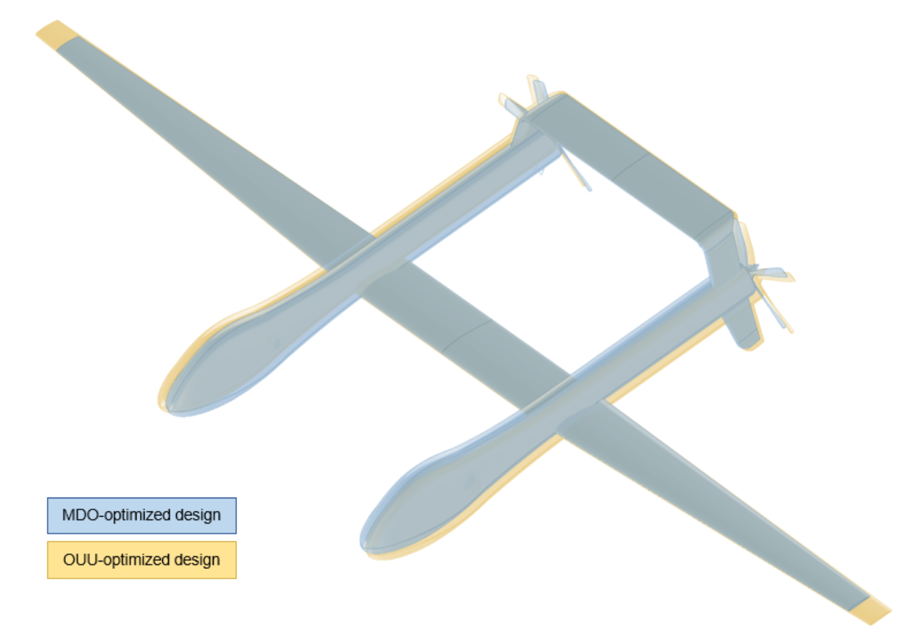

We apply multidisciplinary design optimization (MDO) to aircraft powered by a ground-based laser. Replacing much of the onboard energy supply changes conventional sizing tradeoffs: receiver geometry, thermal dissipation, flight conditions, and backup energy storage must be considered together.
Identifying the requirements that drive mass
Physics-based sizing and parameter sweeps reveal how payload, altitude, onboard endurance, and distance from the laser affect the preferred design. In the modeled scenario, aircraft mass changes little with source distance until roughly 600 km, then rises sharply, identifying a regime where transmission distance becomes a dominant sizing concern.
Paper: Orndorff et al. [1]
Accounting for uncertain flight conditions
A separate uncertainty-aware formulation produces a design more robust to the modeled flight-condition variations than the deterministic optimum. Graph acceleration cuts the reported uncertainty-aware optimization time by a factor of five, making it about twice the deterministic optimization cost in that study.
Paper: Wang et al. [2]




Optimization problem
| Formulation element | MDOUU |
|---|---|
| Case | Robust laser-beam-powered aircraft MDOUU |
| Objective | Minimize mean plus three standard deviations of aircraft total weight. |
| Design variables | |
| Wing span scaling | 1 |
| Tail span scaling | 1 |
| Tail incidence | 1 |
| Pitch angle | 1 |
| Mach number | 1 |
| Rotor speed | 1 |
| Aperture diameter | 1 |
| Wing-beam cap thickness | 14 |
| Wing-beam web thickness | 14 |
| Total design variables | 35 |
| Random inputs | |
| Altitude — Uniform(4,000–6,000 m) | 1 |
| Horizontal distance — Uniform(220–280 km) | 1 |
| Payload weight — Uniform(40–60 kg) | 1 |
| Total random inputs | 3 |
| Constraints | |
| Robust optical-power residual | 1 |
| Robust trim residual | 1 |
| Robust maximum stress | 70 |
| Total constraints | 72 |
| Models and conditions | Coupled laser-power transmission, vortex-lattice aerodynamics, blade-element momentum propulsion, beam structures, and thermal dissipation with independent uniform uncertainty in altitude, horizontal distance, and payload weight. |
| Representative source | Graph-accelerated large-scale multidisciplinary design optimization under uncertainty of a laser-beam-powered aircraft |
| Source locator | Table 2, page 6. |
References
- Nicholas C. Orndorff, Bingran Wang, Marius L. Ruh, Andrew H. Fletcher, John T. Hwang. Gradient-Based Sizing Optimization of Power-Beaming-Enabled Aircraft. AIAA AVIATION 2023 Forum, p. 4019, 2023.DOIPDF
@inproceedings{orndorff2023gradient, author = {Nicholas C. Orndorff and Bingran Wang and Marius L. Ruh and Andrew H. Fletcher and John T. Hwang}, title = {Gradient-Based Sizing Optimization of Power-Beaming-Enabled Aircraft}, booktitle = {AIAA AVIATION 2023 Forum}, pages = {4019}, year = {2023}, doi = {10.2514/6.2023-4019}, url = {https://doi.org/10.2514/6.2023-4019} } - Bingran Wang, Nicholas C. Orndorff, Anugrah J. Joshy, John T. Hwang. Graph-accelerated large-scale multidisciplinary design optimization under uncertainty of a laser-beam-powered aircraft. AIAA SCITECH 2024 Forum, 2024.DOIPDF
@inproceedings{wang2024grapha, author = {Bingran Wang and Nicholas C. Orndorff and Anugrah J. Joshy and John T. Hwang}, title = {Graph-accelerated large-scale multidisciplinary design optimization under uncertainty of a laser-beam-powered aircraft}, booktitle = {AIAA SCITECH 2024 Forum}, year = {2024}, doi = {10.2514/6.2024-0169}, url = {https://doi.org/10.2514/6.2024-0169}, note = {Metadata verification: Crossref DOI} }
Research connections